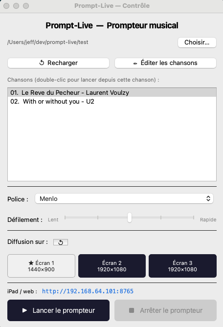
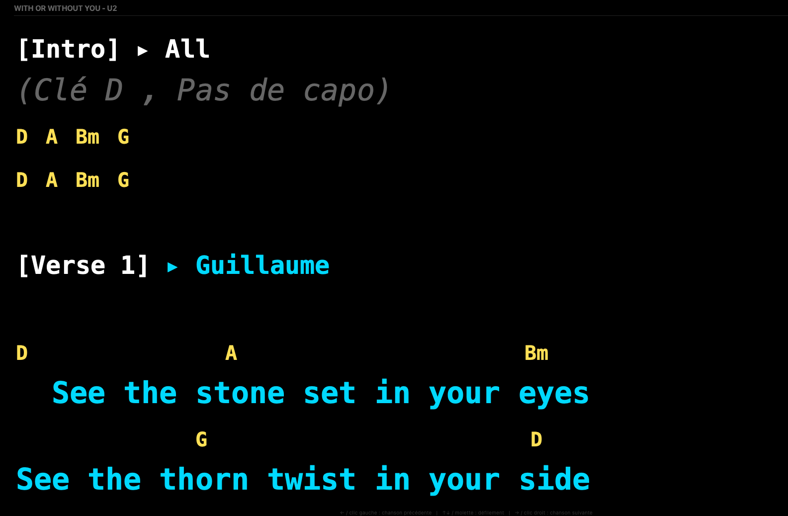
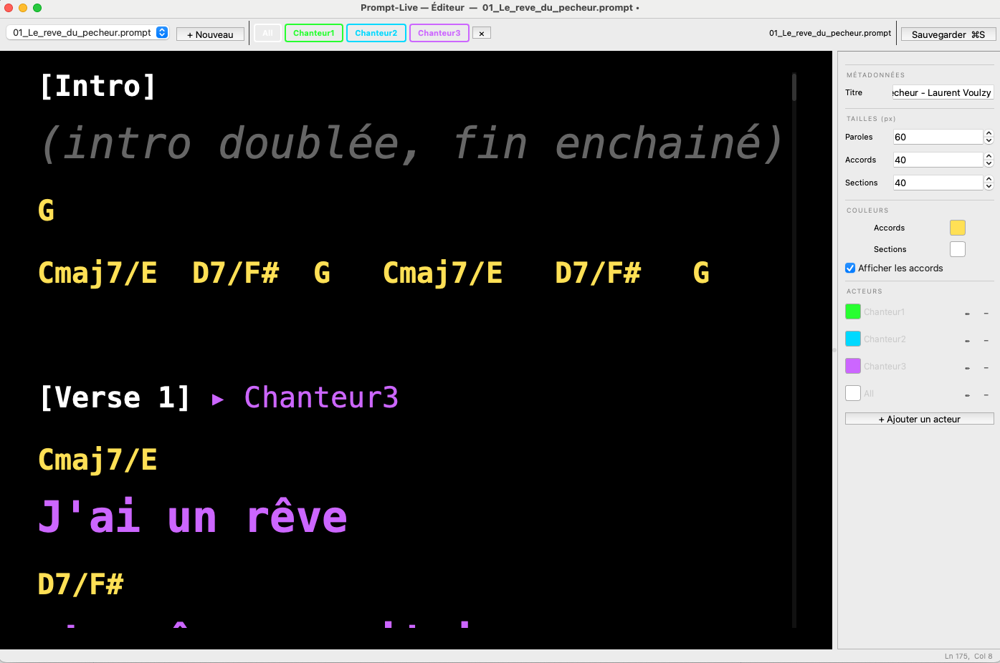

prompt-live
Prompteur plein écran pour musiciens, orateurs et conférenciers — paroles, accords ou discours sur grand écran, en temps réel.
macOS
Windows
Musique live
Discours & prédications
Bluetooth
iPad sync
Prompteur plein écran pour musiciens, orateurs et conférenciers — paroles, accords ou discours sur grand écran, en temps réel.
Paroles, accords et sections colorées par chanteur. Défilement piloté depuis la régie ou au pied avec un pédalier Bluetooth.
Afficher un texte long sur un écran ou un retour scène. Avancer à son propre rythme, sans regarder ses notes.
Souffleur numérique : le texte défile sur un écran visible de la scène, invisible du public.
Prompteur de discours en plein écran. Vitesse et avancement contrôlés par pédale ou clavier, en toute discrétion.
Fonctionnalités
Conçu pour la scène : groupes live, orateurs, prédicateurs, comédiens — tout ce qui se dit ou se chante devant un public.
Chaque interprète a sa propre couleur. Les sections et les lignes sont colorées individuellement pour que chacun repère instantanément sa partie.
Les accords s'affichent au-dessus des paroles avec un alignement parfait garanti par la police monospace PT Mono embarquée.
Le mode prompteur s'affiche automatiquement en plein écran sur l'écran externe — rétroprojection, TV de scène, ou tout autre affichage secondaire.
Tout pédalier Bluetooth HID est supporté. Mode manuel (défilement, chanson suivante/précédente) ou mode défilement auto (démarrer, pauser, changer de chanson d'une simple pression). Voir les pédaliers compatibles →
Serveur intégré accessible sur le réseau Wi-Fi local. Ouvrir http://prompt-live.local:8765 dans Safari — paroles, défilement et défilement auto synchronisés en temps réel.
Éditeur WYSIWYG avec prévisualisation instantanée. Modifier un fichier depuis n'importe quel éditeur externe — le prompteur se recharge automatiquement.
Animation fluide avec 5 niveaux de vitesse pour la pédale et le clavier. Navigation ↑↓ défilement, ←→ chanson précédente/suivante.
Charger un dossier de fichiers .prompt numérotés — l'ordre de passage est automatique.
Horloge affichée dans la fenêtre de contrôle pour garder un œil sur le timing du concert sans quitter l'interface.
Captures d'écran
Trois fenêtres, un seul workflow : contrôle depuis la régie, affichage plein écran, édition en live.

// fenêtre de contrôle — navigation, vitesse, pédale, horloge

// mode prompteur — affichage plein écran sur écran externe

// éditeur intégré — WYSIWYG avec prévisualisation instantanée
Format .prompt
Des fichiers texte lisibles par n'importe quel éditeur. Une syntaxe légère pour définir paroles, accords, sections et couleurs.
[A-G][#b]?... est rendue comme accord.01_..., 02_...#RRGGBB.Téléchargement
Binaires compilés pour macOS, disponibles sur la page Releases GitHub.
Build natif ARM pour tous les Mac avec puce Apple Silicon. Performances maximales, consommation minimale.
↓ Télécharger .zipBuild natif x86 pour les Mac Intel. Entièrement compatible avec les versions macOS récentes.
↓ Télécharger .zipBuild natif Windows 10/11 x64. Dézipper et lancer Prompt-Live.exe directement, sans installation.
L'application n'est pas notarisée Apple. Si macOS bloque le lancement, ouvrir un Terminal et exécuter :
xattr -dr com.apple.quarantine /Applications/Prompt-Live.app
Puis relancer l'application normalement. À faire une seule fois.
Windows SmartScreen peut afficher un avertissement au premier lancement. Cliquer sur Informations complémentaires puis Exécuter quand même. À faire une seule fois.
git clone https://github.com/jfpucheu/prompt-live.git
cd prompt-live && python3 -m venv .venv && source .venv/bin/activate
pip install -r requirements.txt && ./run.sh